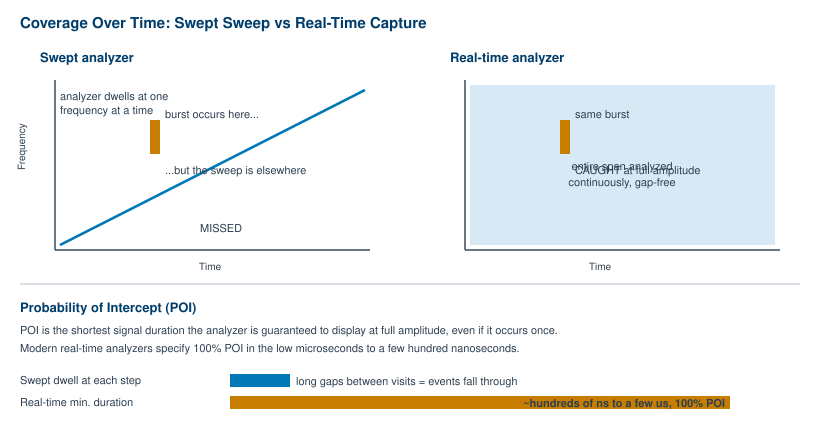
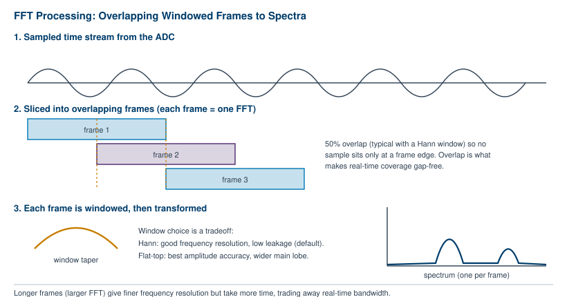
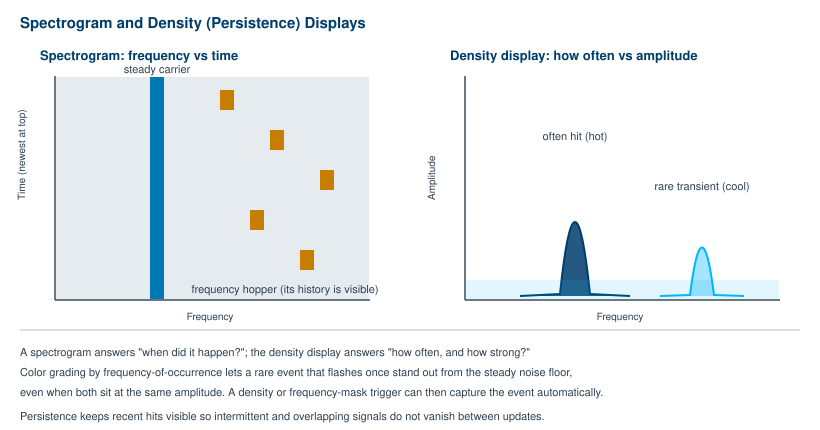

Chapter 4 walked the swept superheterodyne analyzer stage by stage and ended on the tradeoff that governs it: resolution bandwidth sets your frequency resolution, your noise floor, and your sweep time all at once. That instrument is still the workhorse of RF measurement, and for steady signals nothing beats it on value and noise performance. But the swept design has a blind spot. It looks at one slice of the spectrum at a time, which means it is not looking everywhere at once. Signals that appear briefly, hop between channels, or change faster than the sweep can follow are easy to miss entirely.
This chapter is about the instruments built to close that gap. We start with where the swept analyzer runs out of room. Then we open up the FFT analyzer, which computes a whole spectrum from a block of captured samples rather than sweeping a filter across the band. From there we get to real-time spectrum analysis, the architecture that processes samples fast enough to guarantee it will catch a transient, and to the idea that defines it: probability of intercept. We finish with the displays that make all this useful to the eye, and with a practical guide to choosing swept, FFT, or real-time for the job in front of you.
A swept analyzer tunes its local oscillator across the span in steps, dwelling at each step just long enough for the IF filter to settle, then moving on. While it sits at one frequency, it is deaf to every other frequency in the span. Sweep across a wide band at a fine resolution bandwidth and a full pass can take many milliseconds, sometimes seconds. During that pass, any given channel is observed for only a tiny fraction of the total time.
For a carrier that sits still and stays on, this does not matter. The signal is there when the sweep arrives, and the trace is accurate. The problem appears the moment the signal stops sitting still. Consider a few common cases:
In every one of these, the event you care about can begin and end while the swept LO is parked somewhere else in the span. The analyzer sweeps right past the empty channel, finds nothing, and reports nothing. The signal was real. The instrument simply was not looking in the right place at the right moment. Sweep faster to reduce the odds of missing it and you hit the UNCAL wall from Chapter 4: the IF filter no longer has time to respond, so amplitudes go wrong even when you do happen to catch the event.
This is the structural limit of the swept approach. It trades completeness in time for completeness in frequency. To see everything in the span at every instant, you need a fundamentally different way of turning a signal into a spectrum.

The fast Fourier transform offers that different way. Instead of sliding a filter across the band and reading out one frequency bin at a time, an FFT analyzer captures a block of samples in the time domain and computes the entire spectrum of that block in one mathematical operation. The whole span, across hundreds or thousands of frequency bins, comes out of a single transform. There is no sweeping involved.
The mechanics follow directly from Chapter 4's signal chain. The analyzer digitizes the IF with an ADC, collecting a contiguous record of samples. It then runs an FFT on that record, which converts the time-domain samples into amplitude-versus-frequency data. Because every bin is computed from the same block of time, the FFT shows what the spectrum looked like during that one capture window, all frequencies simultaneously. The key advantage over a swept analyzer is speed: an FFT analyzer is limited only by how long it takes to acquire the data and compute the transform, not by a filter dwelling at each step in turn [5].
That speed is not free, and the constraints are worth understanding. The first is frequency range. An FFT can only analyze frequencies up to half the sampling rate of the ADC (the Nyquist limit), so the highest frequency an FFT analyzer can see directly is tied to how fast it samples [5]. This is why wideband instruments do not run a raw FFT on the antenna. They use the superheterodyne front end from Chapter 4 to bring a chunk of spectrum down to an IF that the ADC can handle, then run the FFT there. The FFT covers a window of bandwidth; the front end moves that window wherever you need it.
The FFT assumes the block of samples it transforms repeats forever, end to end. Real signals rarely line up so that the end of the block joins the start cleanly, and that discontinuity smears energy across neighboring bins, an effect called spectral leakage. The fix is a window function: a taper applied to each block that eases the samples down toward zero at the edges, softening the discontinuity. Windowing is one of the central choices in FFT analysis, and it is a genuine tradeoff rather than a free improvement.
The choice mirrors the swept analyzer's RBW decision in spirit. You are again trading the ability to separate close signals against the ability to read amplitude precisely, only now the lever is the window shape rather than a filter bandwidth.
A single FFT is a snapshot of one block of time. To follow a signal continuously, the analyzer slices the incoming sample stream into many successive frames and transforms each one. If those frames simply sat end to end, a window's taper would push the samples near each frame boundary toward zero, so an event landing on a boundary would be attenuated or lost. Overlapping the frames solves this. By starting each new frame partway into the previous one, every sample lands near the center of at least one frame, where the window weights it fully [2].
A 50% overlap is the standard pairing with a Hann window: samples at the edge of one frame fall at the center of the next [2]. Overlap is what turns a string of FFT snapshots into gap-free coverage of the signal, and it is one of the levers that determines whether an analyzer can guarantee it will catch a brief event. It is also one of the factors that sets probability of intercept, the subject of the next section.

An FFT analyzer computes spectra quickly, but computing a spectrum quickly is not the same as computing every spectrum, with no gaps, no matter how fast the samples arrive. A real-time spectrum analyzer (RTSA) adds exactly that guarantee. It is an instrument engineered so that its FFT processing keeps pace with the full sample stream across its entire real-time bandwidth, producing overlapping spectra continuously, with no samples discarded between them. Nothing in the band, for as long as the capture runs, goes unanalyzed.
That continuous, gap-free processing is what lets an RTSA make a promise a swept or ordinary FFT analyzer cannot: a guaranteed minimum on the briefness of the signals it will catch. This promise has a name.
Probability of intercept (POI) is the minimum duration a signal must have for the analyzer to be guaranteed to display it, untriggered, at its full amplitude, even if it occurs only once [4]. Read that definition carefully, because each clause matters. "Guaranteed" means 100% of the time, not most of the time. "Untriggered" means you did not have to know in advance when the event would happen. "Full amplitude" means the displayed level is accurate, not an attenuated fraction of the real signal. "Even if it occurs only once" means a single, non-repeating flash counts.
A swept analyzer has, in effect, a terrible POI: a transient shorter than the time between visits to its channel can vanish without a trace. A real-time analyzer turns POI into a hard specification measured in the low microseconds or even a few hundred nanoseconds. Current instruments publish 100% POI figures in this range. Reported values include roughly 3.6 microseconds on some designs, and as short as around 227 to 232 nanoseconds on wideband instruments paired with hundreds of megahertz of real-time bandwidth [1][4]. (Treat exact numbers as model-specific and verify against the current datasheet for any given instrument.)
POI is not a single magic number that an analyzer either has or lacks. It is set by a chain of design choices working together: the sampling rate, the time-record length (FFT size), the window function, the window size, the amount of FFT overlap, and the noise floor [3][4]. Larger FFTs give finer frequency resolution but take longer to fill and process, which lengthens the minimum duration the instrument can guarantee. More overlap shortens it, at the cost of more processing. The POI figure on a datasheet is the net result of how a manufacturer balanced these factors.
Tech Note - Reading a POI specification
Two numbers travel together on a real-time analyzer's datasheet: the 100% POI minimum signal duration and the real-time bandwidth over which it holds. A short POI quoted at a narrow real-time bandwidth is a different capability than the same POI quoted across hundreds of megahertz. Always read the pair together, and confirm whether a figure is the 100% POI or a lower-confidence value. Verify model-specific numbers against the current datasheet.
The other defining specification is real-time bandwidth: the width of the span across which the analyzer can sustain that gap-free processing. Inside the real-time bandwidth, the POI guarantee holds. Outside it, you are back to stepping the front end from one window to the next, which reintroduces the very gaps the architecture exists to eliminate. A signal that hops across a range wider than the real-time bandwidth can still slip through, in the moment the instrument is retuning between windows. When you size an RTSA for a job, real-time bandwidth and POI are the two numbers to read first, and they have to be read together.
Computing every spectrum is only half the job. An RTSA can produce far more spectra per second than a human eye can absorb, often tens of thousands or more. A conventional trace shows one spectrum at a time and overwrites it on the next update, which throws away almost everything the instrument just measured. The displays in this section exist to compress that flood of spectra into a picture a person can actually read, and they are a large part of what makes real-time analysis useful in practice.
A spectrogram stacks spectra over time. Frequency runs along one axis, time along the other, and amplitude is mapped to color or intensity. Each new spectrum becomes a thin line added to the display, so the result is a scrolling history of spectral activity. A steady carrier shows up as a straight stripe holding its frequency. A frequency hopper paints a scatter of marks marching across channels, its entire pattern of hops laid out in front of you. A pulsed signal appears as a row of dashes with gaps between them. The spectrogram answers the question a single trace cannot: not just what is present now, but when each thing happened and how it changed [6].
A density display, sometimes called a persistence display, attacks a different question: how often. Instead of plotting one trace, it accumulates many spectra into a bitmap and color-grades each point by how frequently the signal lands there. Points that are hit constantly, like a steady carrier or the noise floor, glow in the "hot" end of the color scale. Points hit rarely, like a transient that flashed once, register in a "cool" color [6]. A common convention grades frequent activity toward red and infrequent, transient events toward blue [6].
This color grading by frequency of occurrence is what makes a rare event visible. On an ordinary trace, a transient at the same amplitude as the noise simply blends in. On a density display, the steady noise is one color and the rare transient is another, so the eye separates them instantly even though they sit at the same level. Adjustable persistence keeps recent hits on screen for a chosen time before they fade, so intermittent and overlapping signals stay visible rather than blinking out between updates [6]. The display becomes a living map of which parts of the band are busy, which are quiet, and which carry the occasional surprise.
These displays do more than show signals. They can trigger on them. A frequency mask trigger (sometimes called a frequency mask gate) lets you draw a boundary in the frequency domain and have the instrument capture data the instant any energy crosses it, so it watches the whole acquisition bandwidth for new activity without your intervention [6]. A density trigger fires on the persistence of the display itself: set a density level and any activity that occurs more, or less, often than that threshold triggers a capture [6]. Pair a trigger with a spectrogram and the workflow closes neatly. The instrument catches the violating event on its own, and you click the moment it occurred in the spectrogram to pull up the detailed spectrum from that exact instant [6]. You stop staring at the screen waiting for a glitch and let the analyzer wait for you.

None of these architectures is best at everything. The right choice follows from the signal you are measuring and the question you are asking. Here is how the three compare on the things that usually decide it.
Frequency range. Swept superheterodyne analyzers reach the highest frequencies, well into the tens of gigahertz, because the swept front end can tune across enormous ranges [5]. A raw FFT is capped by the ADC sample rate, so wideband coverage always comes from a tuned front end feeding the FFT, not from the FFT alone [5]. For sheer top-end frequency reach, the swept architecture leads.
Speed and narrowband measurement. For a narrow span, the FFT wins decisively. It computes the whole span at once, limited only by acquisition and transform time, while a swept analyzer at a fine RBW crawls because sweep time scales as one over RBW squared [5][7]. For very wide spans, that flips: swept analysis can be substantially faster than tiling a band with many narrowband FFTs [5][7].
Catching transients. This is the real-time analyzer's home ground. If the signal is brief, bursty, hopping, or intermittent, only an RTSA gives you a guaranteed probability of intercept and the gap-free coverage to back it up [1][4]. A swept analyzer will eventually miss the event; an ordinary FFT analyzer may miss it in the gaps between captures. For interference hunting, signal monitoring, and any agile or pulsed waveform, real-time is the architecture built for the task.
Dynamic range and noise. Here the swept design with a digital IF still holds an edge. FFT-based analysis is generally less accurate than swept analysis on phase-noise-like dynamic range, and FFTs tend to carry more noise in that regard [7]. For the lowest noise floor and the cleanest steady-state measurement at a given price, the swept analyzer remains the value choice, which is exactly why it is still so common.
The hybrid reality. In practice the line between these categories has blurred. Many high-end instruments combine a swept-tuned front end with FFT-based digital IF processing and real-time detection, so a single box gives you wide frequency range, fast narrowband FFTs, and real-time transient capture depending on the mode you select [5][7]. The question on the bench is less "which instrument do I own" and more "which mode fits this measurement."
A simple way to decide: if the signal sits still, sweep it. If you need a narrow span fast or want vector and modulation analysis, use the FFT. If the signal might not be there when you look, go real-time.
BNC in Practice - Further reading on real-time analysis
This chapter has stayed at the level of architecture and intent. Real-time analysis has considerable depth beyond it, including the detail of POI engineering, trigger design, modulation analysis on captured records, and the measurement workflows that exploit gap-free capture. For a dedicated treatment, see the companion Berkeley Nucleonics book, The Nuts and Bolts of Real-Time Spectrum Analysis, which develops the ideas introduced here into a full working reference. For model-specific real-time bandwidth, POI, and dynamic range figures, consult the current datasheet for the instrument in question. Verify against current datasheet.
Take it interactively. The quiz lives on its own page with hidden answers - write your attempt first (even four characters works), then reveal. Self-graded. About 10 minutes.
Or read the questions and answers inline below (preserved for print and offline use).
[1] Tektronix, "What is Probability of Intercept (POI) and Why it Matters," and RSA-series real-time spectrum analyzer documentation citing 100% POI minimum signal durations in the low microseconds to a few hundred nanoseconds (for example ~232 ns at 800 MHz real-time bandwidth). www.tek.com. Verify exact, model-specific figures before publication.
[2] Dewesoft, "Guide to FFT Analysis," and National Instruments, "Fundamentals of FFT-Based Signal Analysis and Measurement," on window functions (Hann vs flat-top tradeoffs) and the standard 50% overlap with a Hann window. Verify before publication.
[3] Anritsu, "Understanding Key Real-Time Spectrum Analyzer Specifications" (white paper), on the factors that set POI, including sampling rate, FFT size, window function and size, overlap, and noise floor. Verify before publication.
[4] In Compliance Magazine, "Let's Talk About Real-Time Spectrum Analyzers," and TRS-RenTelco, "Understanding and Applying Probability of Intercept in Real-Time Spectrum Analysis," for the POI definition (minimum duration to display a single, untriggered event at full amplitude). Verify before publication.
[5] National Instruments and "Swept-Tuned vs FFT" working-principles references, on FFT speed for narrow spans, the Nyquist/ADC-rate limit on FFT frequency range, and swept analyzers' high-frequency reach. Verify before publication.
[6] Tektronix, "DPX Acquisition Technology for Spectrum Analyzers Fundamentals" (primer), on color-graded density/persistence displays, spectrograms, density triggers, and frequency mask triggers. Verify before publication.
[7] Rohde & Schwarz, "Speeding up Spectrum Analyzer Measurements" (application note), and IEEE, "FFT and Swept Spectrum Analysis in Microwave Measurements," on swept-vs-FFT speed by span width, dynamic-range and phase-noise tradeoffs, and hybrid swept-plus-FFT architectures. Verify before publication.
[8] Berkeley Nucleonics Corporation, The Nuts and Bolts of Real-Time Spectrum Analysis (companion volume), and current spectrum analyzer product documentation, www.berkeleynucleonics.com. Refer to the current datasheet for model-specific real-time bandwidth, POI, and dynamic range figures. Verify against current datasheet before publication.